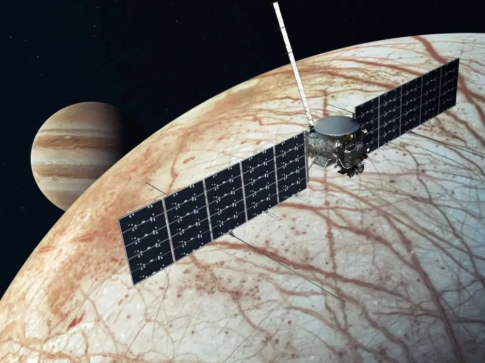
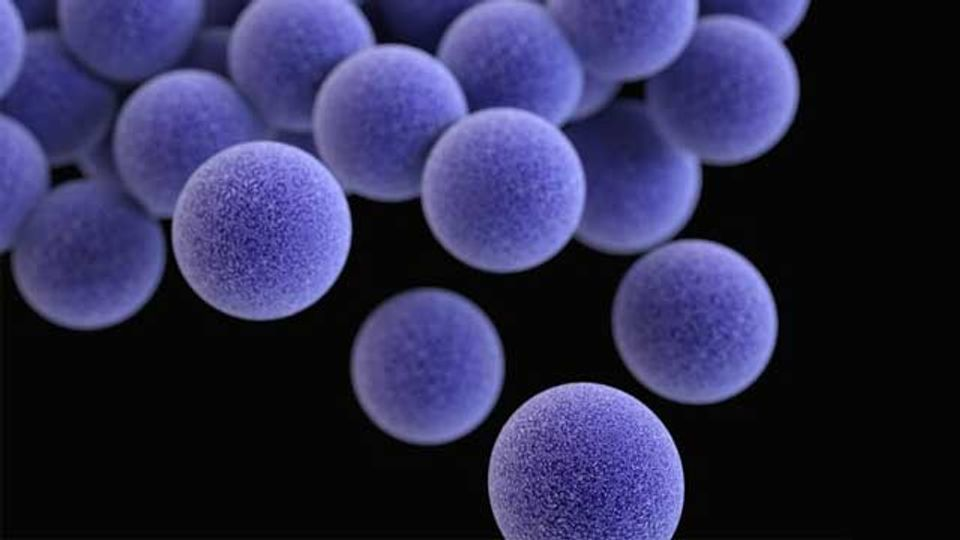

Latest Science Updates
🔬 NASA Discovers Possible Signs of Life on Europa
NASA’s recent findings from the Europa Clipper mission suggest potential evidence of microbial life beneath the icy crust of Jupiter’s moon Europa.
- Scientists detected high concentrations of carbon dioxide in the surface ice.
- Plumes of water vapor were observed erupting from cracks, indicating a subsurface ocean.
- Previous missions have hinted at conditions suitable for microbial life.
- The findings will be further analyzed in upcoming space missions.
🦠 New Superbug Found That Resists All Known Antibiotics
Scientists have identified a dangerous new strain of bacteria that has evolved resistance to every known antibiotic.
- Named **XDR-23**, the bacteria was discovered in hospital ICUs across three countries.
- Researchers warn of a potential global health crisis if containment measures fail.
- Ongoing trials are testing new treatment methods, including bacteriophages.
- Public health organizations urge governments to restrict overuse of antibiotics.
🚀 India Successfully Tests Hypersonic Missile

India’s Defense Research and Development Organization (DRDO) has successfully conducted a hypersonic missile test, marking a major milestone in defense technology.
- The missile reached speeds above **Mach 7**.
- It was launched from an undisclosed test facility and hit its target with high precision.
- The technology will be integrated into India’s defense systems in the coming years.
- Hypersonic missiles are harder to intercept than traditional ballistic missiles.
🌍 AI Predicts Climate Change Tipping Points
Scientists are using artificial intelligence to predict when and where climate change tipping points may occur.
- The AI model can analyze decades of environmental data in minutes.
- Preliminary results suggest the Amazon rainforest could reach an irreversible tipping point by 2045.
- Melting glaciers and rising sea levels are expected to accelerate faster than previously estimated.
- Governments are being urged to take immediate action to curb emissions.
🧬 Scientists Create First Synthetic Human Embryo
In a breakthrough experiment, researchers have developed a synthetic human embryo without using sperm or eggs.
- The study opens new doors for infertility treatments.
- Bioethical concerns have been raised about the implications of this technology.
- The embryos were grown using stem cells that mimicked early human development.
- Regulatory agencies are closely monitoring future experiments.